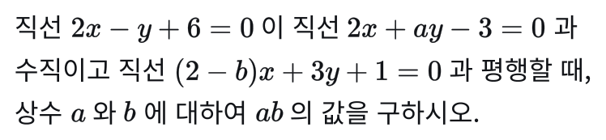
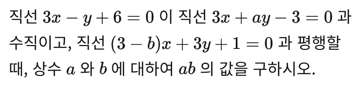
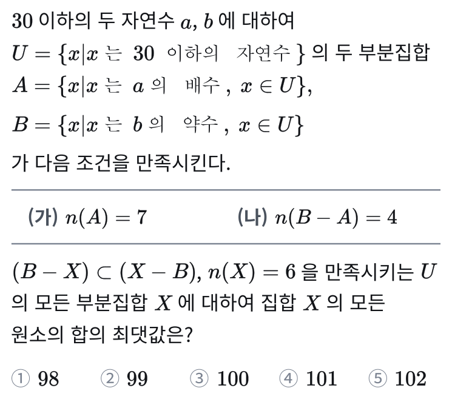
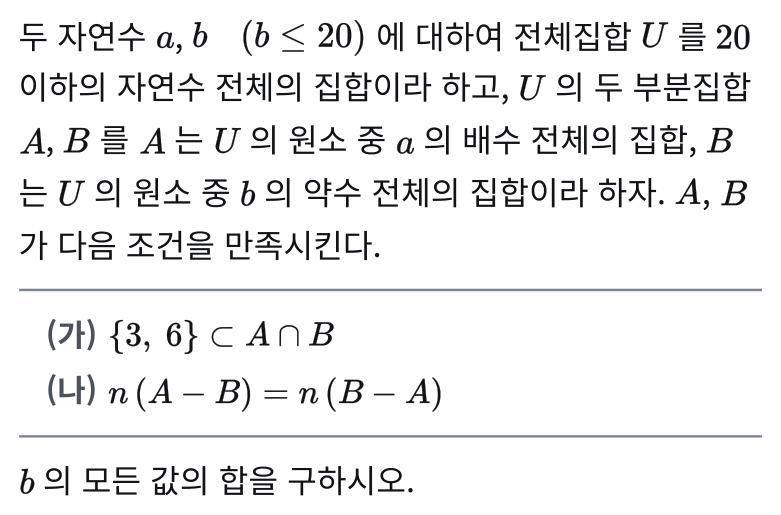
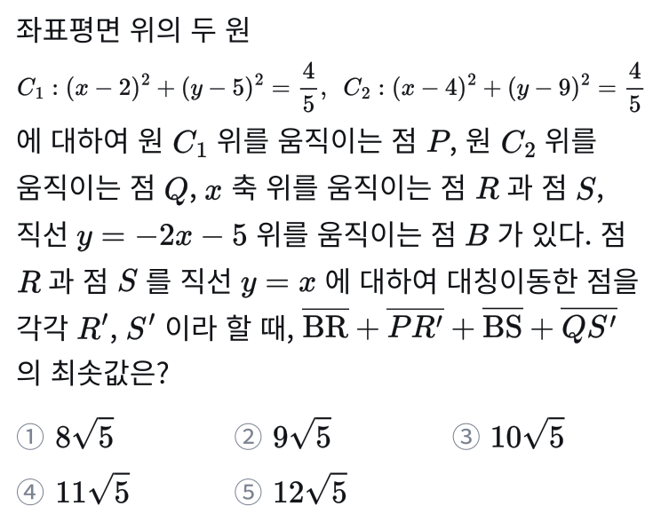
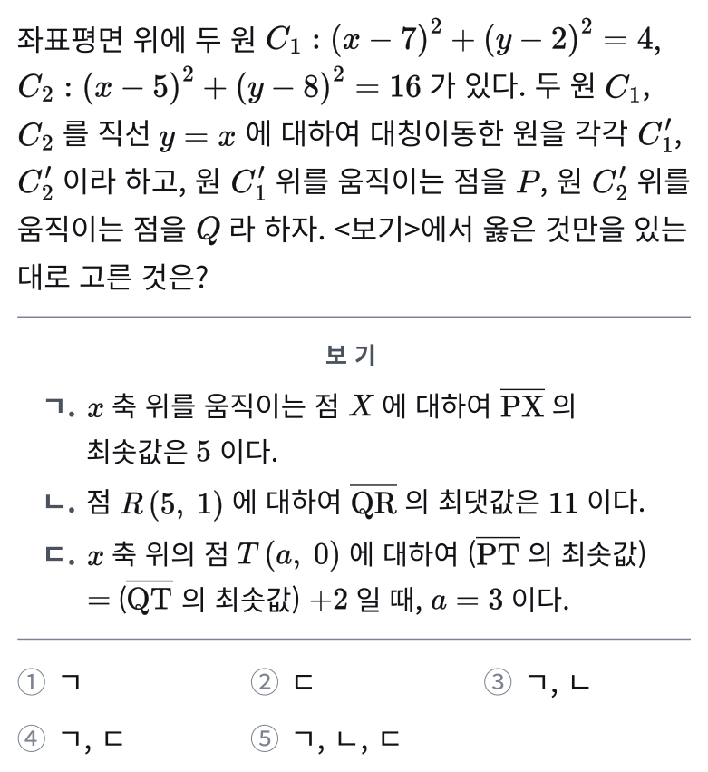

중대부고 1학년
수학 내신 자료집
중앙대학교사범대학부속고등학교(중대부고) 1학년 수학 시험이 어디서, 어떻게 바뀌어 나오는지를 2025~2026년 7개 시험으로 분석했습니다. 이번 2학기 중간고사 23문항의 출처와 수업 문제 비교, 기말고사 대비 순서까지 한 페이지에 정리합니다.
교과서·부교재에서 출제
다룬 문항 (배점 86.7점)
9월 테스트에 변형으로 수록
기출 분석 시험 수
중대부고 1학년 수학 시험은 이렇게 나온다
2025학년도 1학기 중간부터 2026학년도 2학기 중간까지 7개 시험의 문항 출처를 교과서·부교재·학력평가 문항과 대조한 결과입니다.
선택형 60 : 서답형 40
유일하게 고정된 비율입니다. 문항 수는 22~23문항으로 시험마다 조금씩 다르고, 서술형은 문항당 7점으로 2~3문항이 나옵니다. 서술형은 풀이 없이 답만 쓰면 0점입니다.
두 권으로 끝난다
원본은 교과서(미래엔)와 부교재(올림포스 전국연합 기출)입니다. 2025 2학기 중간과 2026 2학기 중간은 출처 확인율 100%였고, 시중 유형서에서 가져온 문항은 확인되지 않았습니다.
그대로 내지 않는다
2026 2학기 중간 23문항 중 원문 그대로 나온 문항은 0개입니다. 숫자·소재만 바꾼 것 9, 조건을 바꾼 것 9, 두 문항을 합친 것 5문항이었습니다.
7개 시험의 부교재 출제 비율
| 시험 | 과목 | 문항 수 | 부교재 원본 비율 | 출처 확인율 |
|---|---|---|---|---|
| 2025 1학기 중간 | 공통수학1 | 22 | 31.8% | 90.9% |
| 2025 1학기 기말 | 공통수학1 | 22 | 36.4% | 77.3% |
| 2025 2학기 중간 | 공통수학2 | 22 | 72.7% | 100% |
| 2025 2학기 기말 | 공통수학2 | 23 | 34.8% | 91.3% |
| 2026 1학기 중간 | 공통수학1 | 23 | 47.8% | 78.3% |
| 2026 1학기 기말 | 공통수학1 | 23 | 65.2% | 82.6% |
| 2026 2학기 중간 | 공통수학2 | 23 | 65.2% (73점) | 100% |
배점 자리마다 출처가 다르다 — 3층 구조
| 층 | 자리 | 원본 | 바꾸는 정도 |
|---|---|---|---|
| 1층 | 3점대 선택형 · 서답형 앞 세 문항 | 교과서 본문·교사용 자료, 부교재 유형연습 | 숫자·소재만 바꾼다. 2026 2학기 중간에서 교과서 8문항 27점이 모두 여기였다 |
| 2층 | 4점대 선택형 · 서답형 뒤쪽 · 서술형 | 부교재 변별 문항 | 조건을 바꾸거나, 거꾸로 묻거나, 이웃 번호 두 문항을 결합한다 |
| 3층 | 선택형 최고 배점 1~2자리 · 단답형 끝 | 부교재 1등급 도전 코너 · 유형연습 마지막 번호 | 구조는 유지하고 조건을 가리거나 발판(보기·풀이 과정)을 지운다. 극상 난이도가 여기서 나온다 |
관측된 변형 방식 7가지
- 숫자·소재만 바꾸기 — 교과서 자리 전부. 7점 서술형도 숫자만 바꿔 낸 적이 있다(2026 2학기 중간 21번).
- 거꾸로 묻기 — 조건과 결론을 맞바꾼다. 변의 길이를 주고 외접원을 묻던 문항을, 외접원 넓이를 주고 삼각형 넓이를 묻는 식.
- 조건 재설계 — 조건 문장을 갈아 끼우되 풀이의 뼈대는 유지한다.
- 구조 가리기 — 길이의 비를 각의 이등분선 성질로 숨기거나(2026), 원을 지우고 직각 조건만 남긴다(2025).
- 발판 제거 — 보기 ㄱㄴㄷ를 지우고 최솟값 하나만 묻거나, "다음은 ~하는 과정이다"의 빈칸 풀이 과정을 지운다.
- 조건 추가 · 늘리기 — 고정된 수 하나를 움직이게 하거나 답 후보를 늘린 뒤 최대·최소를 묻는다. 4점 이상 난이도를 올리는 주된 방법(8문항 40.6점).
- 두 문항 결합 — 부교재 이웃 번호끼리(유형연습 31+33번, 14+15번) 또는 다른 단원의 기본 문항을 얹는다. 5점 이상과 서술형 자리에 온다.
- 작년 원본 재사용 — 2025 2번·20번의 원본이 2026 22번·8번으로 돌아왔다.
이번 시험 분석 — 23문항 출처·난이도·킬러
시행 2026년 10월 2일 · 범위 평면좌표 · 직선의 방정식 · 원의 방정식 · 도형의 이동 · 집합 · 선택형 14(60점) + 단답형 6(19점) + 서술형 3(21점)
출제 원천 (배점 기준)
부교재 「올림포스 전국연합 기출」 15문항(6~14·18~23번) 73점, 교과서 미래엔 본문·교사용 자료 8문항(1~5·15~17번) 27점. 미확인 0문항. 선택형 1~5번과 서답형 앞 세 문항이 교과서, 선택형 6번부터와 서답형 4번부터는 전부 부교재입니다.
단원별 난이도 분포 (23문항)
난이도는 하 7 · 중 7 · 상 6 · 극상 3. 집합이 8문항(34.3점)으로 최대 단원이 됐고(작년 5문항), 서술형 한 자리(23번)까지 집합입니다. 극상 3문항은 원의 방정식(13·20번)과 도형의 이동(14번)에서 나왔습니다.
극상 난이도 3문항 — 전부 부교재 최상위 문항의 변형
직선 y=x 위의 두 점과 세 점을 지나는 원
선택형 · 5.0점 · 원의 방정식부교재 1등급 도전 문항의 길이 조건(OB=2OA)을 "각의 이등분선이 선분을 1:2로 내분한다"로 가려서 냈습니다. 교점 두 개와 원의 방정식까지 손으로 구해야 하는 계산량입니다.
대칭이동과 네 선분의 길이의 합의 최솟값
선택형 · 5.2점(최고 배점) · 도형의 이동부교재 유형연습 마지막 번호의 보기 ㄱㄴㄷ를 지우고, 고정점이던 B를 직선 위를 움직이는 점으로 바꿔 네 선분의 합을 물었습니다. 늘리기와 발판 제거가 겹친 유일한 문항입니다.
직선과 축에 동시에 접하는 원의 개수
단답형 · 4점 · 원의 방정식부교재 1등급 도전 문항에서 미지수 둘을 하나로 줄이고 조건 (가)(나)를 부호 조건으로 바꿨습니다. 중심이 이차함수 그래프 위에 있고 직선과 축에 동시에 접하는 원의 개수를 판별식으로 나누는 구조는 그대로입니다.
이번 시험이 말해 주는 것
교과서 27점은 숫자만 바뀐다. 부교재 73점은 조건이 바뀐다. 두 책을 조건이 바뀐 형태까지 풀어 본 학생에게 유리한 구조였고, 극상 3문항의 원본은 모두 학교가 짚어 준 1등급 도전 코너와 유형연습 끝 번호에 있었습니다. 준킬러급(8·9·11·12번과 서술형 22·23번)은 상위권 안에서 실수 여부를 갈랐습니다.
실제 시험 문제와 수업에서 미리 푼 변형 문제
"교과서와 부교재가 원천이고, 킬러는 부교재 최상위 문항에서 조건이 바뀌어 나온다"는 예측에 따라 원본의 숫자 변형·조건 변형을 직접 만들어 9월 과제와 테스트에 실었습니다. 23문항 중 19문항(86.7점)의 원본 또는 변형을 수업에서 다뤘고, 극상 3문항은 전부 9월 테스트에 변형으로 실렸습니다. 아래는 시험 문제와 수업 문제를 나란히 둔 것입니다. 같은 문제가 나온 것이 아니라 풀이의 핵심이 되는 설정이 일치합니다.










기말고사(12월 9일 예정)에 그대로 가져갈 문법
범위는 공통수학2의 명제 · 함수 · 유리함수 · 무리함수입니다. 최종 범위와 날짜는 학교 공지로 확정됩니다. 이번 중간고사에서 확인된 출제 문법 중 기말에도 통할 다섯 가지입니다.
- 원본은 부교재와 교과서가 전부다. 교과서는 교사용 자료까지, 부교재는 하·중 난이도 문항까지 본다. 7점 서술형이 쉬운 문항의 숫자 변형으로 나온다.
- 학교가 짚어 준 번호는 맞다. 그러나 절반만이다. 짚어 준 번호 41.9점 + 짚지 않은 부교재 31.1점. 앞뒤 번호를 함께 푼다.
- 1등급 도전 코너는 절반이 나온다. 킬러 3문항이 전부 부교재 최상위 문항의 변형이었다.
- 작년 원본이 돌아온다. 지난 2개년 기출의 원본은 변형까지 풀어 둔다.
- 난이도를 올리는 방법은 '늘리기'다. 고정된 수 하나를 문자로 풀어 움직이게 하거나, 답 후보를 늘린 뒤 최대·최소로 묻는다. 원본을 푼 뒤 "이 수가 문자였다면?"을 되묻는 훈련을 한다.
기말 대비 4단계 (10월 12일 개강 ~ 12월 7일)
- 1개념 복습 5회 완성 10월 12일 개강
명제부터 무리함수까지 기말 범위 개념을 5회에 걸쳐 복습합니다. 회차마다 교재·과제·테스트가 한 묶음이고, 교과서 문항이 27점 출제된 만큼 교과서 문제를 빠짐없이 풉니다.
- 2원본 + 변형 학습지 10월 30일 ~ 11월 20일
부교재 기말 범위 3개 단원을 원본 → 숫자 변형 → 조건 변형 순서로 완주합니다. 학교가 짚어 주는 번호는 앞뒤 번호까지 함께 풉니다.
- 3예상 시험지 · 개인별 보완 11월 23일 ~ 30일
지난 기말 기출을 바탕으로 만든 예상 시험지를 원본판·변형판으로 풀고, 테스트 오답을 모아 학생마다 보완 교재를 따로 만듭니다.
- 4파이널 모의 · 재시험 12월 4일 · 7일
학교 시험지 양식의 파이널 모의고사와 재시험으로 시간 관리와 실전 감각을 완성합니다. 7점 서술형 3문항에 대비해 풀이 과정을 끝까지 쓰는 연습을 합니다.
중대부고 1학년 수학 내신, 학부모님이 자주 묻는 것
중대부고 1학년 수학 내신은 어디서 출제되나요?
중대부고 1학년 2학기 기말고사 수학 범위와 날짜는?
중대부고 수학 시험은 얼마나 어렵나요?
학교에서 짚어 준 부교재 번호만 풀면 되나요?
중대부고 수학 내신 준비는 언제, 어떤 순서로 하나요?
수업은 어떻게 진행되나요?
중대부고 1학년 수학 내신 대비 학원은 어디에 있나요?
개념상상 대치관 박민수T · 중대부고 1학년 반
개념상상 대치관으로 전화 주시면 중대부고 1학년 반 상담 일정을 잡아 드립니다. 학생의 최근 시험지가 있으면 문항별로 어디서 점수가 갈렸는지 함께 봅니다.
- 대상
- 중대부고(중앙대학교사범대학부속고등학교) 1학년 · 공통수학2 2학기 기말 대비
- 수업
- 주 2회(월·금) · 10월 12일 개강 · 12월 7일 파이널까지 17회
- 구성
- 개념 복습 5회 → 원본+변형 학습지 → 예상 시험지·개인별 보완 → 파이널 모의·재시험
- 그 외
- 중대부고 2학년 반(미적분Ⅰ) 운영
- 학원
- 개념상상 대치관
- 강사
- 박민수T (중대부고 1·2학년 수학)
- 주소
- 서울특별시 강남구 도곡로 418 강원빌딩 4층
(대치동 1024-4 · 한티역 인근) - 전화
- 02-566-0508
- 웹
- mlabmath.com